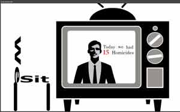
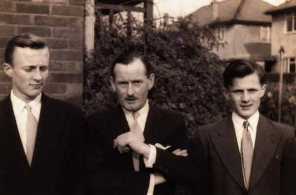

Home
Welcome to Ben Stone's multimeda site. This records all that has happened in the past year for Unit 1/2 Interactive Digital Media.
Below you can find images that will take you to the appropriate page where I completed that particular work and other similar works.

